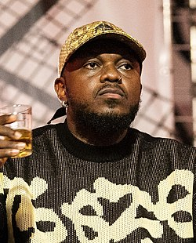

Djonga
Gustavo Pereira Marques, natural de Belo Horizonte, nasceu em 4 de julho de 1994. Mais conhecido como Djonga, é rapper, compositor e escritor brasileiro. Considerado um dos nomes mais influentes do rap nacional na atualidade, o artista chama atenção por suas letras diretas e agressivas, com fortes críticas sociais.
Biografia
Djonga cresceu na periferia de Belo Horizonte, onde teve contato com o rap e com a cultura hip hop ainda na juventude. Estudou história na UFMG, mas decidiu seguir a carreira musical. Começou a se destacar na cena do rap nacional por volta de 2016, e desde então lançou diversos álbuns que marcaram o gênero com temáticas sociais, raciais e políticas.
Resumo da Carreira
Djonga começou sua carreira na cena do rap nacional em 2015, fazendo parte do coletivo "Favela Cria". No ano seguinte, participou da faixa “Santa Ceia”, ao lado de outros rappers como FBC, Oreia, Clara Lima e Hot Apocalypse, ganhando destaque com sua voz potente e versos marcantes.
Em 2017, lançou seu álbum de estreia, "Heresia", que o colocou de vez como um dos grandes nomes do rap brasileiro. O disco trouxe letras potentes sobre racismo, desigualdade e vivências da periferia, com destaque para a faixa “Esquimó”.
No ano seguinte, veio "O Menino Que Queria Ser Deus" (2018), onde Djonga mostrou ainda mais maturidade lírica e musical. O disco consolidou seu nome e se tornou um dos mais importantes do rap nacional recente, com faixas como “Leal” e “Hat-Trick”.
Em 2019, lançou "Ladrão", álbum que também teve grande impacto. Nele, Djonga faz reflexões sobre o racismo estrutural, a luta por reconhecimento e sua própria trajetória enquanto artista preto em ascensão.
Durante a pandemia, em 2020, surpreendeu com o álbum "Histórias da Minha Área", onde voltou suas rimas para a realidade das quebradas e vivências da juventude periférica. O disco foi muito elogiado por sua abordagem sensível e direta.
Em 2021, lançou "NU", um trabalho mais introspectivo e emocional, onde Djonga compartilha vulnerabilidades e dilemas pessoais. Já em 2022, lançou "O Dono do Lugar", reafirmando sua posição como uma das principais vozes do rap nacional.
Além dos discos, Djonga coleciona clipes de grande sucesso no YouTube, milhões de plays nas plataformas digitais, e já foi indicado a diversos prêmios, sendo reconhecido como um dos artistas mais importantes da nova geração do rap no Brasil.
Com um estilo único, presença marcante e compromisso com causas sociais e raciais, Djonga segue como uma voz poderosa que representa a juventude preta e periférica do país.
Músicas de Sucesso
- Olho de Tigre
- Leal
- Hat Trick
- Junho de 94
- Eterno
Controvérsias
Ao longo de sua carreira, Djonga também esteve envolvido em algumas controvérsias que repercutiram na mídia e nas redes sociais.
Em 2020, durante o período mais crítico da pandemia de COVID-19, o rapper foi alvo de críticas ao realizar um show com aglomeração de público, o que gerou debate sobre responsabilidade social em tempos de crise sanitária. Apesar das críticas, Djonga se posicionou nas redes sociais e seguiu com seus projetos musicais.
Outra situação que ganhou repercussão ocorreu no dia 12 de dezembro de 2021, durante um evento em Belo Horizonte. Djonga se envolveu em uma confusão com um segurança, sendo acusado de agressão. A situação foi registrada em vídeo e dividiu opiniões na internet. O rapper mais tarde se pronunciou sobre o ocorrido, afirmando que reagiu em defesa própria.
Além desses episódios, uma das características polêmicas do artista é o uso recorrente da metáfora das “moscas” em suas músicas e falas, referindo-se a críticas e ataques constantes que sofre na internet e na mídia. A expressão acabou se tornando uma marca de sua postura combativa diante da opinião pública.